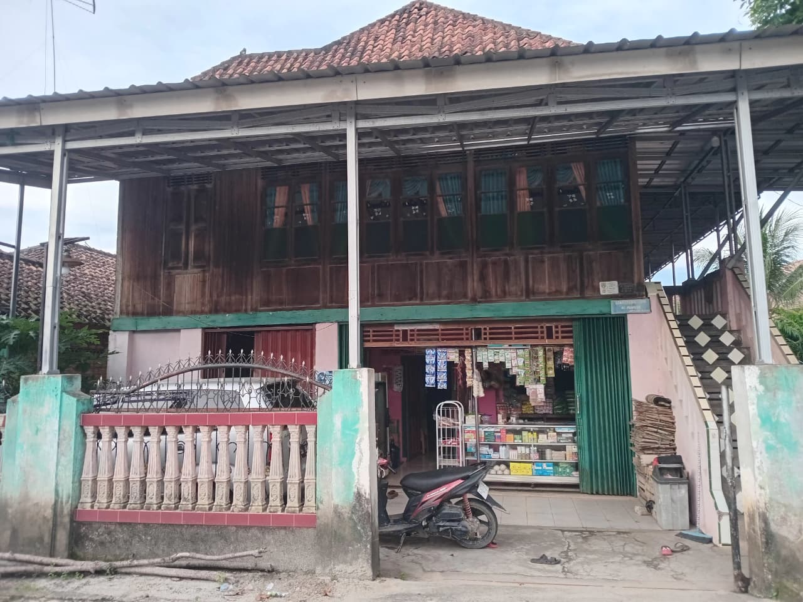
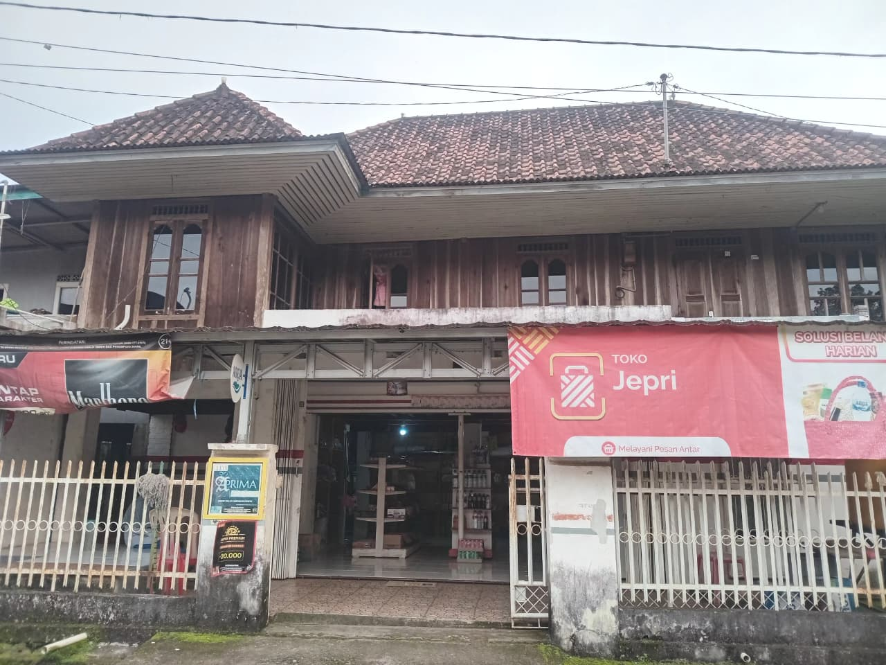
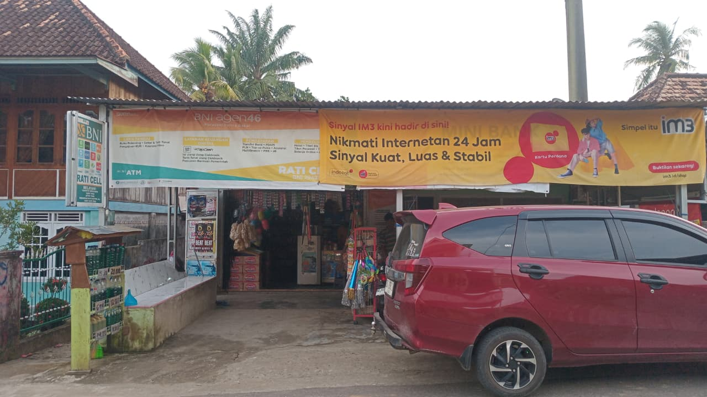

Desa Tanjung Dalam memiliki masyarakat yang sebagian besar bermata pencaharian sebagai petani karet serta pelaku usaha kecil dan menengah. Nilai gotong royong dan kebersamaan masih sangat kuat dalam kehidupan sosial masyarakat.

Menyediakan kebutuhan pokok harian masyarakat dengan lokasi strategis di pemukiman warga.

Menyediakan sembako, jajanan, dan kebutuhan rumah tangga untuk warga sekitar.

Toko sembako di pinggir jalan desa yang melayani kebutuhan harian warga dan pengguna jalan.
Kumpulan berita informasi seputar kegiatan masyarakat dan program pendampingan yang dilaksanakan di Desa Tanjung Dalam.